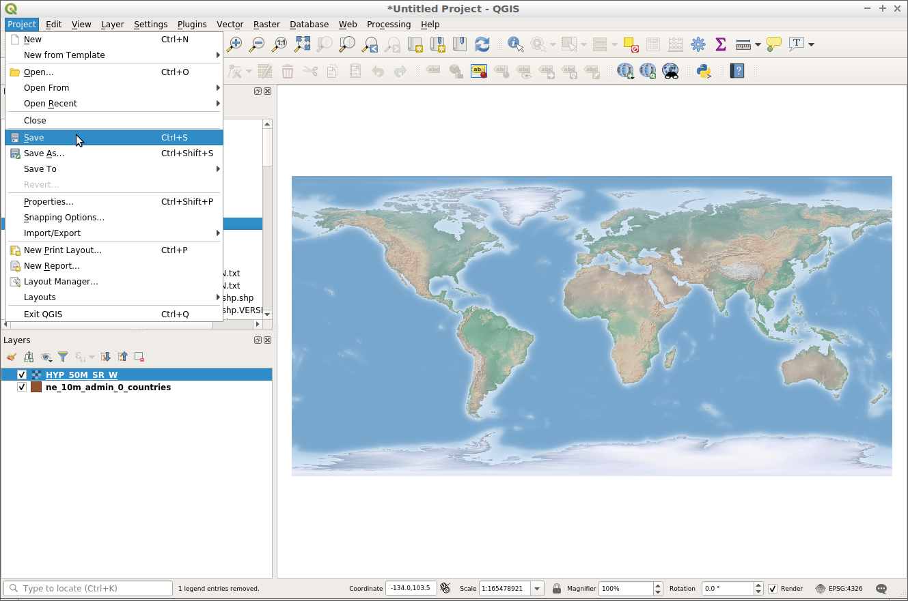
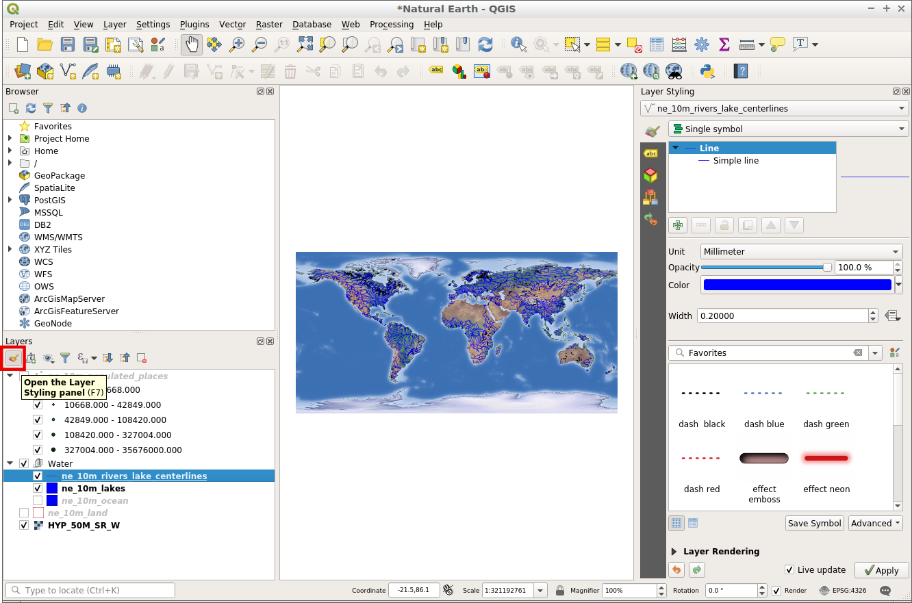
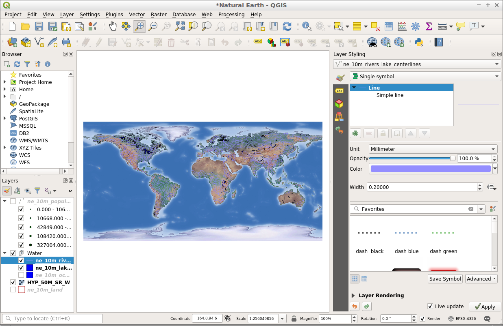

Guide de démarrage avec QGIS¶
QGIS est un logiciel SIG bureautique convivial qui vous permet de visualiser, gérer, éditer, analyser les données et composer des cartes imprimables.
Contents
Démarrer QGIS¶
- Ouvrez le dossier “Desktop SIG”.
- Double clic sur l’icône “QGIS”.
Vous verrez QGIS se lancer avec un projet vide. Les différentes parties de l’interface QGIS sont énumérées ci-dessous.

- [1] Barre de menu : Accès à diverses fonctionnalités QGIS à l’aide d’un menu hiérarchique standard.
- [2] Barres d’outils : Pour l’interaction avec la carte, les couches, les attributs et les sélections.
- [3] Panneau de navigateur : Navigateur de fichiers spatiaux permettant de glisser et de déposer du contenu dans le cadre de la carte.
- [4] Panneau de couches : Contrôle les couches de la carte, leur ordre et leur visibilité.
- [5] Barre d’état : Informations générales sur la carte et l’accès à une barre de recherche universelle.
Créer un projet¶
Pour créer un nouveau projet, choisissez .

Commençons par ajouter une couche vectorielle à la carte. Des couches peuvent être ajoutées à QGIS à l’aide du panneau du navigateur, situé à gauche de l’écran.
- Allez dans le panneau du navigateur sur la gauche de l’écran.
- Naviguez dans l’arbre de dossier jusqu’à “home/data/natural-earth2”.
- Sélectionnez “ne_10m_admin_0_countries.shp”.
- Faites glisser la couche du panneau du navigateur et déposez-la dans le cadre de la carte.

Une fois que la couche a été déposée dans la carte, vous verrez une couche montrant les pays.

Essayons maintenant d’ajouter une couche raster au projet.
- Allez dans le panneau du navigateur sur la gauche de l’écran.
- Naviguez dans l’arbre de dossier jusqu’à “home/data/natural-earth2”.
- Sélectionnez “HYP_50M_SR_W.tif”.
- Faites glisser la couche du panneau du navigateur et déposez-la dans le cadre de la carte.

Une fois que la couche a été déposée sur la carte, vous verrez une couche raster montrant la couverture terrestre et la bathymétrie.

Maintenant que nous avons ajouté du contenu à notre projet, nous pouvons enregistrer ce projet afin que nous puissions y revenir plus tard.
Choisissez .
Choisissez l’emplacement “/home/user/desktop” pour enregistrer le projet.
Appelez le projet “Mon projet QGIS”.

Cliquez sur “Enregistrer”.
{kind=link}
Vous saurez que le projet a été enregistré parce qu’il y aura un fichier de projet sur le bureau appelé “Mon projet QGIS” et le haut de votre document de projet ne sera plus lu comme “sans titre”, mais plutôt se lira comme “Mon projet QGIS”.

Ouvrir un projet existant¶
Un projet QGIS enregistre des couches, des styles, des étendues de carte et des paramètres pour une utilisation ultérieure. Ces informations sont stockées sous la forme d’un fichier de projet QGIS et ont une extension de “.qgs” ou “.qgz”, avec “.qgz” étant le futur format de fichier par défaut dans QGIS.
Ouvrons un projet QGIS existant et jetons un coup d’œil à son fonctionnement.
- Ouvrez QGIS. Notez que lorsque QGIS est ouvert, il vous sera présenté une liste de projets récents à choisir. C’est un moyen pratique d’ouvrir des projets récents.
- Choisissez .
- Naviguez vers “/home/user/qgis-example”.
- Sélectionnez le projet “QGIS-NaturalEarth-Example.qgs”.
- Cliquez sur “Ouvrir”.

Cela ouvrira un projet QGIS avec un certain nombre de jeux de données Natural Earth, comme indiqué ci-dessous. Ce projet contient un certain nombre de couches dans le panneau de couches et affiche le contenu spatial dans le cadre de la carte.

Les couches peuvent être activées ou désactivées en cliquant sur la case à cocher à côté du nom de la couche dans le panneau de couches. Lorsqu’une couche est activée dans le panneau de calque, le cadre de la carte est mis à jour pour afficher la couche. Un gros plan du panneau de calque est montré ci-dessous.

Interagissons avec le panneau de calque et changeons la visibilité de certaines couches de carte.
- Cliquez sur la case à cocher à côté de la couche “ne_10m_populated_places” pour l’afficher.
- Cliquez sur la case à cocher à côté de la couche “Water” pour désactiver la couche.
Remarquez comment le cadre de la carte a été mis à jour pour refléter les changements dans la liste de calques. Nous pouvons maintenant voir la couche “ne_10m_populated_places” comme des points, mais ne pouvons plus voir les rivières et les lacs qui sont dans la couche “Water”.

En plus de contrôler la visibilité des couches, nous pouvons également modifier l’ordre dans lequel les couches sont dessinées dans le panneau de couches. Cela se fait en sélectionnant une couche dans le panneau de couches et en la faisant glisser vers le haut ou vers le bas de la liste. L’ordre sur lequel les couches apparaissent dans la liste de couches est l’ordre sur lequel elles s’appuieront dans le cadre de la carte.
- Faites un clic gauche sur la couche “HYP_50M_SR_W”.
- Tout en maintenant le bouton de la souris appuyé, glissez la couche vers le haut de la liste.
Remarquez comment la couche raster est maintenant au-dessus de toutes les autres couches dans le panneau de couche. Cela rend maintenant la couche raster sur le dessus de toutes les autres couches dans le cadre de la carte.

Essayez de déplacer la couche “HYP_50M_SR_W” vers le bas de la liste de couches. Ce serait une position plus appropriée pour une couche de carte comme celle-ci.
Naviguez dans la carte¶
La barre d’outils de navigation permet aux utilisateurs de se déplacer autour de la carte et de modifier l’étendue de la carte.

- [1] Déplacement : Permet à la carte d’être déplacée vers un nouvel emplacement.
- [2] Zoom avant : Permet de zoomer dans l’étendue de la carte.
- [3] Zoom arrière : permet de zoomer en dehors de la carte.
- [4] Zoom sur toute l’étendue : Modifie l’étendue de la carte pour s’adapter à l’étendue de toutes les couches dans le cadre de la carte.
- [5] Zoom sur la couche : Modifie l’étendue de la carte pour s’adapter à l’étendue de la couche mise en évidence dans le panneau de couches.
Essayons de modifier l’étendue de la carte avec l’outil de zoom.
- Sélectionnez l’outil “Zoom in” à partir de la barre d’outils de navigation.
- Déplacez le curseur sur le cadre de la carte.
- Cliquez et maintenez le bouton gauche de la souris.
- Tout en tenant le bouton de la souris, déplacez le curseur en diagonale dans n’importe quelle direction. Notez que cela dessine un rectangle qui est la zone qui sera zoomée.
- Relâchez le bouton de la souris lorsque vous êtes satisfait de la zone créée.
Note
Le processus d’utilisation de l’outil de zoom arrière est le même que l’outil de zoom. Le résultat est tout le contraire.
Maintenant, regardons l’outil de zoom sur toute l’étendue. Cet outil va zoomer la carte à une emprise qui s’adaptera à toutes les couches de la carte. Pour utiliser cet outil, cliquez sur le bouton “Zoom sur toute l’étendue”.
Enfin, essayez l’outil de zoom sur l’étendue d’une couche. Pour utiliser cet outil, suivez les étapes suivantes :
- Cliquez sur un nom de couche dans le panneau de couche.
- Cliquez sur le bouton “Zoom sur la couche”.
La carte doit zoomer sur l’emprise de la couche sélectionnée (“active”).
Styliser vos couches¶
Les couches peuvent être stylisées dans QGIS à l’aide du panneau de style. Le panneau de style n’est pas visible par défaut, mais facilement accessible via un bouton en haut du panneau de couche comme indiqué ci-dessous.
{kind=link}
Le bouton ci-dessus agit comme une bascule de sorte que le panneau de style peut être facilement caché de la vue en cliquant sur le même bouton à nouveau. Lorsque le panneau de style est activé, il apparaît sur le côté droit de l’écran prêt à styliser la couche active mise en valeur dans le panneau de couche.
Avec le panneau de style ouvert, nous pouvons modifier l’apparence de la couche montrée en haut du panneau de style.

Avec le panneau de style maintenant ouvert, nous pouvons modifier la couleur et la largeur des lignes dans la couche “ne_10m_rivers_lakes_centrelines”. Essayons d’abord de modifier la couleur.
Cliquez sur l’échantillon “Couleur” ci-dessous. Cela vous permettra de choisir une couleur différente.

Dans la palette “Choix d’une couleur”, déplacez le curseur vers votre couleur préférée.

Cliquez ensuite sur la flèche arrière pour revenir à l’aperçu du rendu du symbole.

L’aperçu du symbole sera mis à jour avec la nouvelle couleur, tout comme la couche dans le cadre de la carte.

{kind=link}
Dans le panneau de style, nous pouvons également modifier la taille des entités de la carte. Pour modifier l’épaisseur des lignes, suivez ces étapes :
Assurez-vous que la cocuhe “ne_10m_rivers_lakes_centrelines” est sélectionnée en haut du panneau de style.
Dans le panneau de style, entrez la valeur “0.5” dans le champ “largeur”.

Notez l’augmentation de la largeur de la ligne dans l’aperçu du symbole, et ainsi que les lignes qui sont dans le cadre de la carte.
Choses à essayer¶
- Étendez les fonctionnalités de QGIS avec les Plugins.
- Commencez à manipuler les données avec la Boite à outils de traitements.
- Utilisez QGIS pour afficher le contenu d’une base de données PostGIS.
- Essayez de publier votre carte QGIS sur le Web à l’aide de`QGIS Map Server <../overview/qgis_mapserver_overview.html>`_. dans le menu
Ensuite ?¶
Pour en savoir plus sur QGIS, un bon point de départ est la Documentation page sur la page d’accueil QGIS et le ebook A Gentle Introduction to GIS .